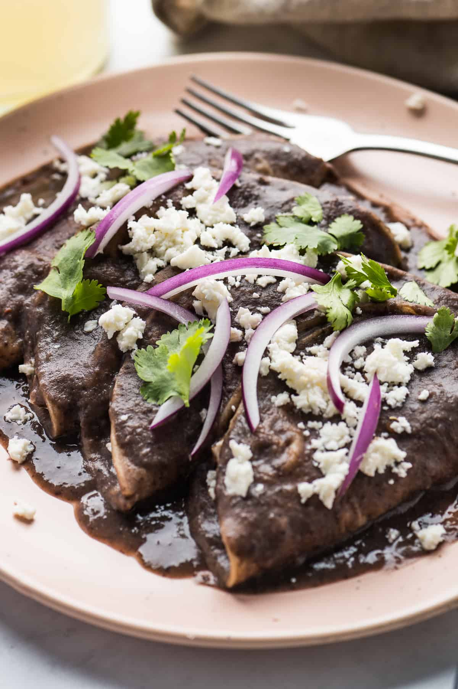

Enfrijoladas Recipe

Description:
The enfrijoladas are a food simple as complex, what determines the virtue or misfortune of its flavor is centered on what gives it its name, the beans.
For this recipes we will need the following ingredients:
- 500g of black beans
- 1/2 onion
- 6 springs of epazote
- Grain salt
- 1/2 tortillas
- 250g of ham
- 250g of white cheese
- Cream and onion cut in moons to taste
Preparation:
- Clean the beans by removing stones and bad beans from the beans you will be cooking. Soak the beans ahead of time, at least one day in advance if you plan to cook the beans in a regular pot.
- Boil the beans, you can do it in a normal or express pot, in either case, fill the pot with the beans, and cover them with water, boil at high flame until the water boils, add onion, a little bit of grain salt and epazote. If you soaked the beans beforehand, you can boil them for an hour and a half, if not, you will have to boil them for a least two or three hours. You can use an express pot to avoid soaking the beans, leaving them for an hour and a half.
- Once the beans cooked, put about two large spoonfuls of them in the blender, add a little of the broth and grind them
- Empty the ground contents into the large saucepan with sufficient depth, heat over low flame and wait for it to boil.
- Put in a small pan, where the tortillas can fit, oil until the surface is covered, heat on medium flame and fry the tortillas, each one is a enfrijolada you want to eat.
- Drain the tortillas from the oil, they should be golden brown but still flexible, put them on a flat surface and add one or two slices of ham, close the tortilla like a quesadilla and put it in the hot beans.
- Take out the enfrijolada already made, place one next to the other at least three, add white cheese previously grated, a little onion on moons, cream a taste, enjoy.